-
Odyssey
Odyssey is a series of alternate future/universe skins in League of Legends. Set in the vastness of the cosmos, each of the champions represent influential individuals of a vast galactic civilization.
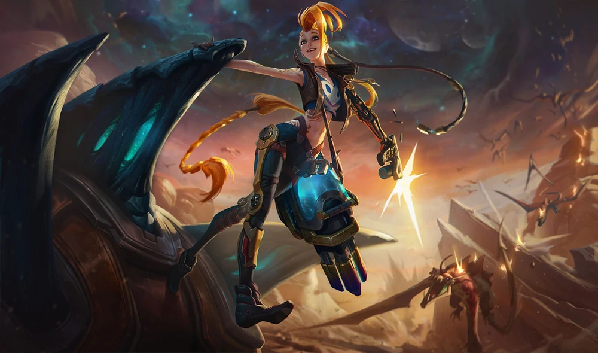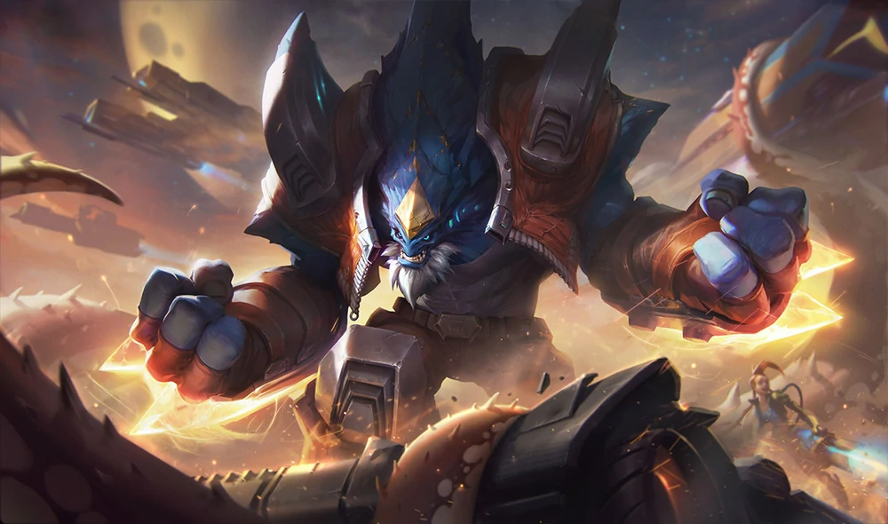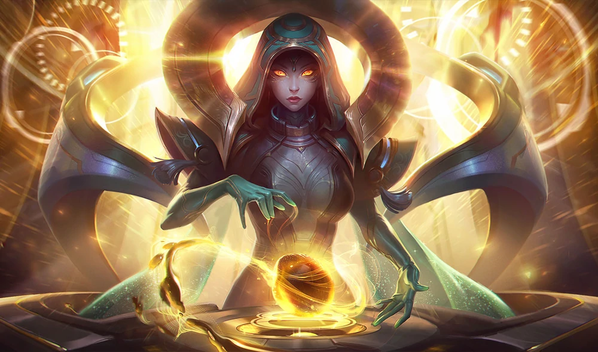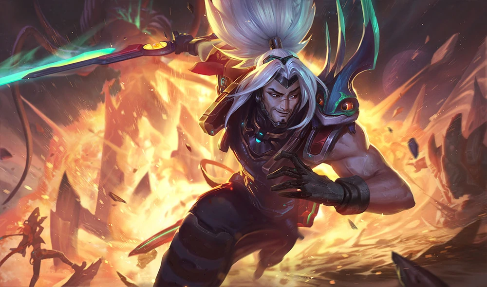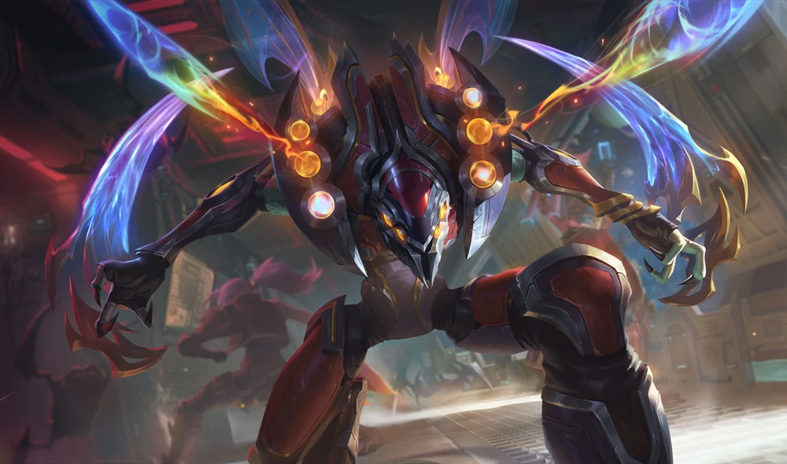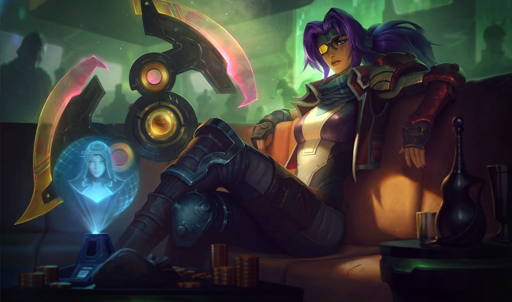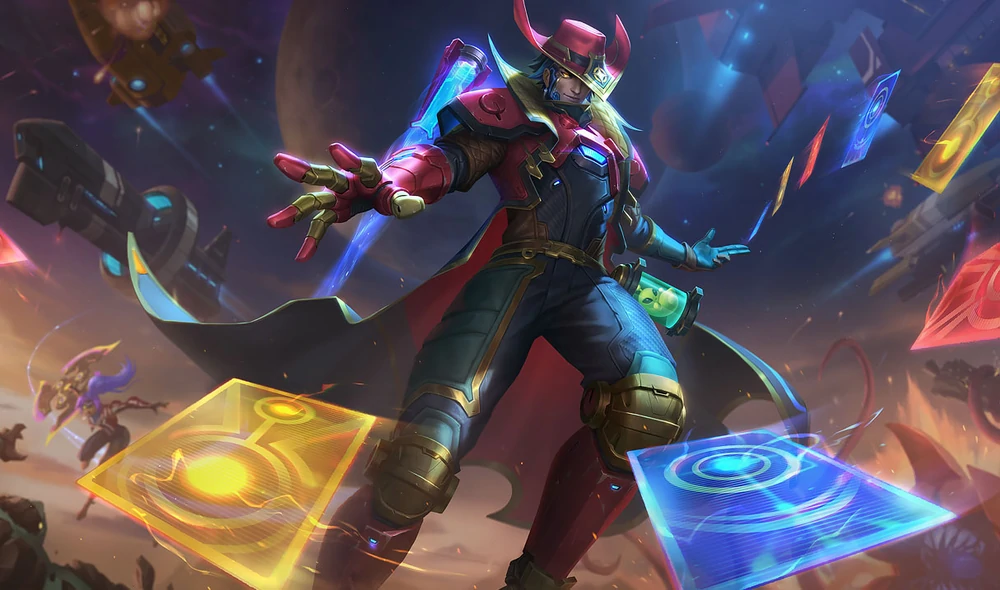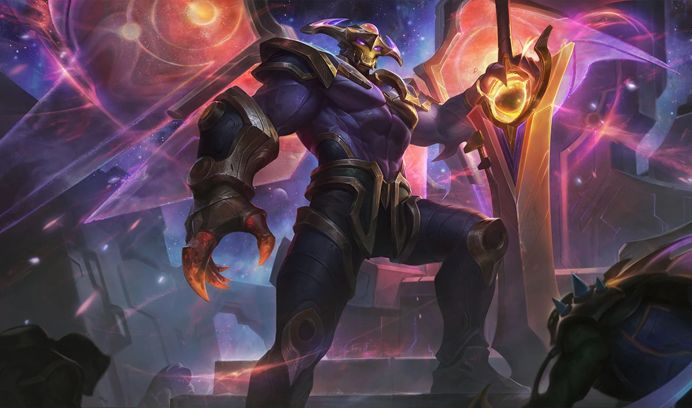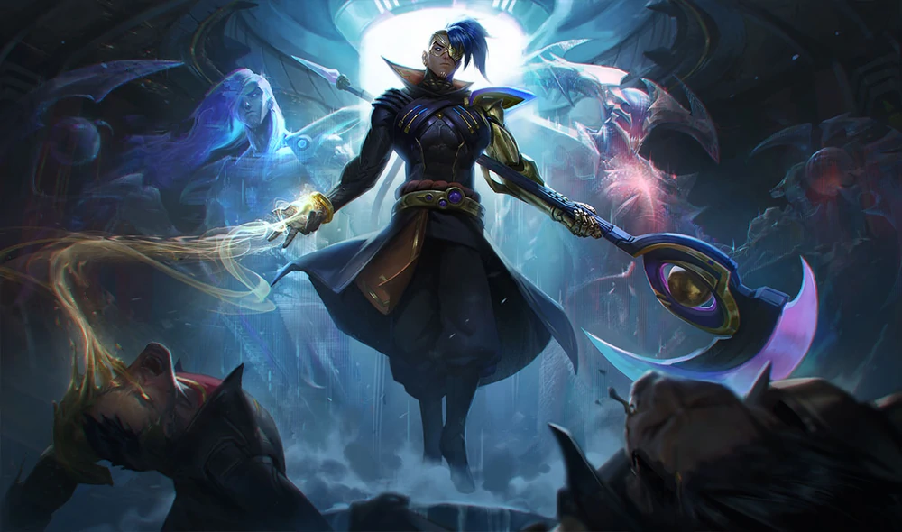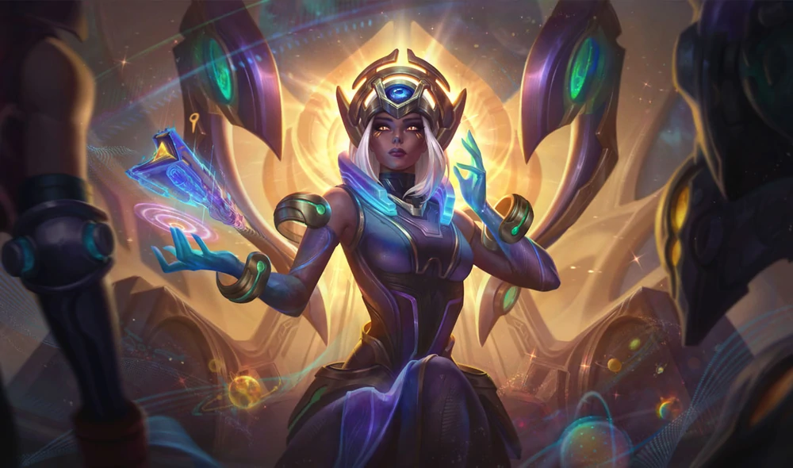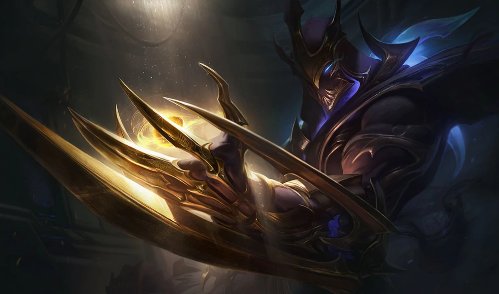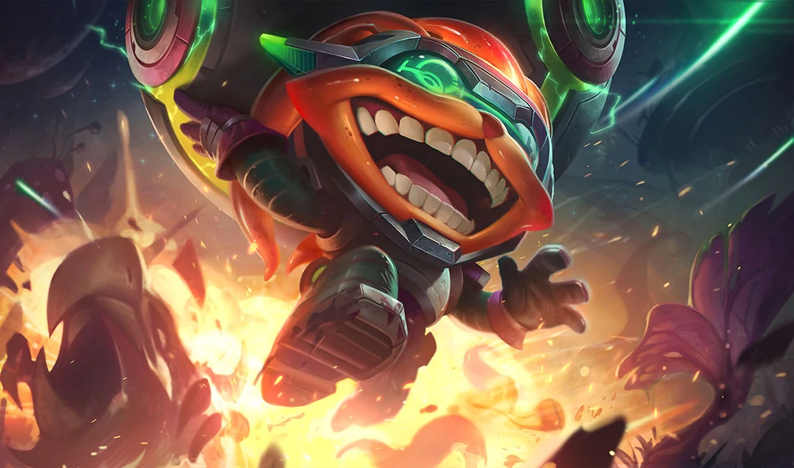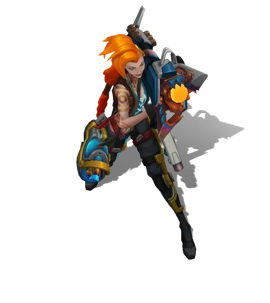Odyssey Jinx
Adept at building and/or destroying (but mostly destroying) a variety of haphazard, highly unstable weaponry for the Morning Star crew, Jinx also serves as the ship's pilot. Her previous job as a mining explosives technician resulted in a lot of collateral damage, and a thoroughly justified dismissal.Odyssey Malphite
Malphite was once the pit boss of a deep space mining operation, until Jinx cracked the asteroid in half and got them both fired. His enduring loyalty to someone who is very obviously a psychopath has landed him in all kinds of danger across the galaxy, but he honestly doesn't seem to mind.Odyssey Sona
Once member of the Templar Order, Sona was born with the ability to commune directly with ora, and the creatures from which it is harvested. More recently, she has sought out Yasuo, troubled captain of the Morning Star, and joined his ragtag crew—hoping to avert a disaster that could destroy the entire galaxy.Odyssey Yasuo
Yasuo never wanted to be a space pirate… until he was framed for his brother's murder, and had to flee his life of relative luxury. Now on the run from a dozen different military and paramilitary factions, he's putting together an eccentric crew to make a new life among the stars.Odyssey Kha'Zix
A member of an elite bounty hunting organization, Kha'zix is cold, ruthless and always gets the job done. Though hired by Karma to track down the missing templars, she doesn't realize that Kha'zix is a double agent secretly working for Aatrox to bring Karma to him.Odyssey Sivir
Sivir runs her own small bounty hunting operation on the fringes of the galaxy. She's self-made and tough, having lost her parents to the Demaxian empire many years prior, but holds on to her soft and sympathetic side despite that hardened exterior. Sivir was hired by Karma, along with the other mercs, to free the captured templars.Odyssey Twisted Fate
A space smuggler erroneously known for discretion, as well as his impractically famous ship, The Wildcard, Twisted Fate was hired by Karma to free some templars from some space pirates. He has only just begun to notice that the other mercs on the job are better known for wetwork than simple heists...Odyssey Aatrox
Aatrox is a violent and notorious crime lord whose name is feared throughout the criminal underworld. He is also disfigured by Ora abuse. Seeking to purge the substance from his body, he abducts Templars to extract it—and kills them when they are unable to do so. He has seized a number of high ranking Templar priests in order to draw out Karma, who he believes will finally heal him.Odyssey Kayn
As an honored Ordinal of the Demaxian Empire, Kayn relentlessly hounds the crew of the Morning Star, hoping to recapture Sona and learn the secrets of the legendary Ora Gate. He bickers constantly with his sentient alien scythe, Rhaast, whose own motivations are far more dire than Kayn could ever realize…Odyssey Karma
A High Priestess of the Templar Order, Karma has hired a group of offworld mercenaries to free a number of captured templars from the grip of Aatrox, an infamous and powerful crime lord. She has taken a more interventionist stance towards the rest of the universe following the loss and transformation of her former lover, Zed.Galaxy Slayer Zed
Zed was a promising Templar before he became host to the hivemind of ora and imbued with its alien essence. Able to morph his body into living weapons, he now sees himself as the perfect life form, deserving of all ora and destined to cleanse the galaxy of the weak.Odyssey Ziggs
A disgraced engineer best known for rapid advances in ora mining technology, Ziggs lost everything when a young technician and her hulking manager “accidentally” rigged one of his devices to explode ahead of schedule. Bitter and manic, he now travels between ora hotspots in a mad gamble to regain his former prestige.
-